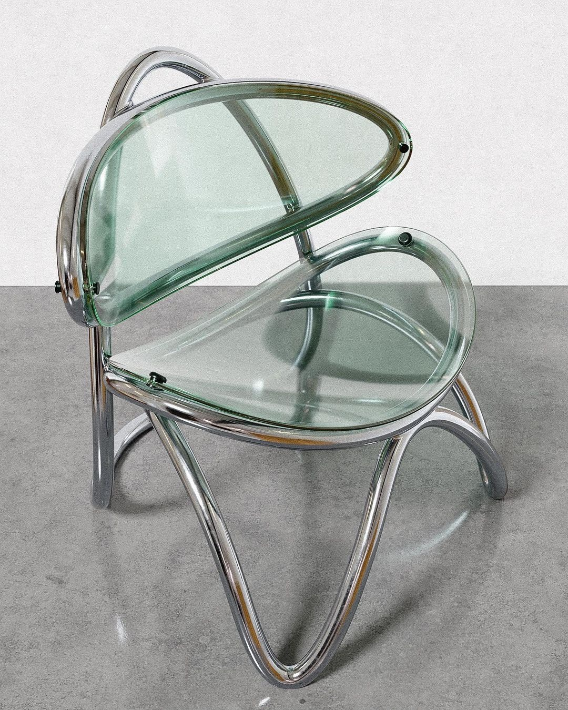
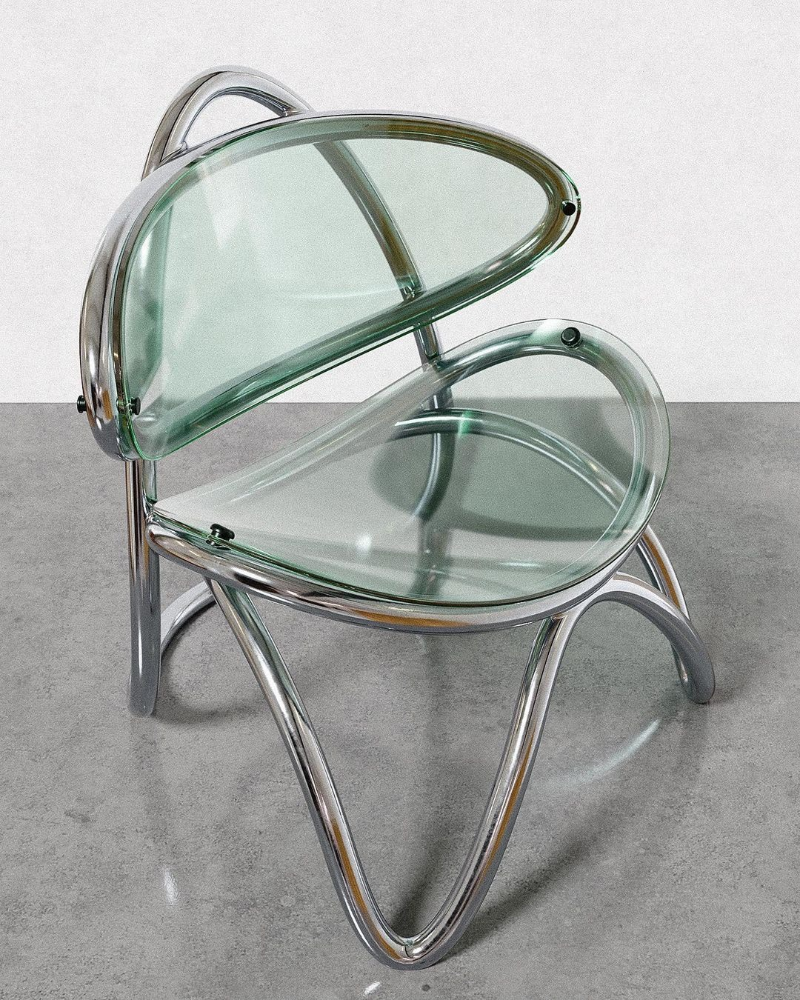

Maurice Burke (Designer britannique)
Chaise Boomerang
Circa 1968 – 1972
Edition : Arkana (Royaume-Uni/Italie) ou Maison Regain (France)
Description : La chaise "Boomerang" est une œuvre d'art sculptural qui capture parfaitement l'optimisme futuriste de la fin des années 1960. Il se caractérise par une silhouette minimaliste, aérée et extrêmement dynamique, obtenue par l'association de formes courbes audacieuses. Le design rappelle l'esthétique du mobilier de l'ère spatiale (Space Age), notamment par l'usage du métal tubulaire chromé et de coques transparentes ou teintées qui semblent flotter. C'est un mariage réussi entre la rigueur du métal et la douceur visuelle des matériaux plastiques.
Structure : Le piètement et le support sont formés d'une structure en Tube d'Acier Chromé à haute brillance. Les pieds s'élèvent en une forme en "V" inversé ou en arc, soutenant l'ensemble sans effort visuel. L'assise et le dossier sont constitués de deux coques de forme ovale/lenticulaire. Ces coques sont réalisées en Plexiglas ou en Acrylique Fumé (souvent vert pâle ou transparent) et sont fixées à la structure en métal par des boulons discrets. Les coques s'articulent l'une en face de l'autre, formant un volume englobant et créant une ligne de coupe nette au centre du fauteuil.
Dimensions : H. (Hauteur totale) : 70 - 75 cm, L. (Largeur) : 60 - 65 cm, P. (Profondeur) : 70 - 75 cm, H. Assise (Hauteur de l'assise) : 35 - 40 cm